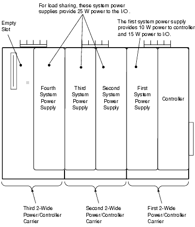
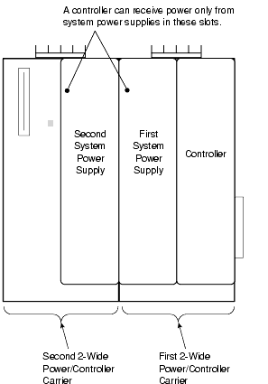
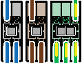
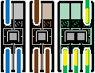
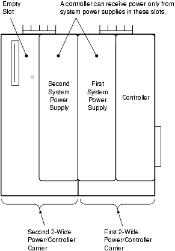

2. System Power Supply (AC/DC)
Page 443, Section J.1
| Parameter | Specification |
|---|---|
| Output | 12 VDC, 1.25 A LocalBus power |
| Simplex Use | Sufficient for small systems (up to 8 I/O cards) |
| Load Sharing | Add additional supplies for systems exceeding 1.25 A |
| Redundancy | Connect a second supply for redundant power |
| Heat Dissipation | 4.4 W |
2.1 LocalBus Current by Configuration
Pages 480–481, Table J-9
| No. of Supplies (AC/DC) | Simplex Controller + Simplex Power | Simplex Controller + Redundant Power | Redundant Controller + Redundant Power |
|---|---|---|---|
| 1 | 1.25 A | N/A | N/A |
| 2 | 3.35 A | 1.25 A | 1.25 A |
| 3 | 5.45 A | 3.35 A | 2.50 A |
| 4 | 7.55 A | 5.45 A | 4.6 A |
| 5 | 9.65 A (limited to 8.0 A*) | 7.55 A | 6.7 A |
| 6 | 11.75 A (limited to 8.0 A*) | 9.65 A (limited to 8.0 A*) | 8.8 A (limited to 8.0 A*) |
* Carrier limitation: current limited to 8.0 A due to carrier constraints.
3. System Power Supply (Dual DC/DC)
Pages 443–447, Section J.2
| Parameter | 12 VDC Input | 24 VDC Input |
|---|---|---|
| LocalBus Power | Up to 13 A | Up to 8 A (4.5 A older models) |
| Sufficient For | Most large DeltaV systems | Medium systems |
| Heat Dissipation | 11.4 W | 26.4 W |
3.1 Wiring Configurations
| Configuration | Key Details |
|---|---|
| Simplex — 12 VDC | Single Dual DC/DC supply, optional fuse block. Use pre-formed metal shorting bars (no individual jumper wires). |
| Redundant — 12 VDC | Two supplies on separate DC power busses. For optimum redundancy, connect each to a separate DC bulk supply. |
| Simplex — 24 VDC | Single supply. Use the left-hand terminal screw only. Optional fuse block. Connect DC Return Reference Ground to enclosure DC Gnd Bus. |
| Redundant — 24 VDC | Two supplies on separate DC power busses. Only one ground wire needed (return side internally connected). Connect to enclosure DC Gnd Bus. |
4. DeltaV Bulk Power Supply Specifications
4.1 100-240 VAC to 12 VDC 15 A (KJ1503X1-BA1)
Pages 447–450, Table J-1
| Item | Specification |
|---|---|
| Output Voltage | 12 VDC (adjustable 12–15 VDC) |
| Output Current | 15–13.5 A continuous; 22.5–20.3 A for 4 seconds |
| Output Power | 180 W continuous; 270 W for 4 seconds |
| Output Ripple | < 50 mV PK-to-PK (20 Hz–20 MHz) |
| Hold-up Time (AC) | 72 ms @ 100 VAC 7.5 A / 31 ms @ 100 VAC 15 A |
| Temp Range | −25°C to +70°C operational |
| Derating | 5 W/°C at +60°C to +70°C |
| AC Input | 100–240 VAC ±15%; 50–60 Hz ±6% |
| AC Input Current | 1.65 A @ 120 VAC; 0.93 A @ 230 VAC |
| AC Efficiency | 91.5% @ 120 VAC; 91.8% @ 230 VAC |
| DC Input | 110–150 VDC −20%/+25% |
| Dimensions (H × W × D) | 12.4 × 6 × 11.7 cm (4.9 × 2.4 × 4.6 in) |
| Terminals | Bistable quick-connect spring-clamp, IP20 finger safe |
| Wire — Solid | Max 6 mm² (10 AWG) |
| Wire — Stranded | Max 4 mm² (11 AWG) |
4.2 100-240 VAC to 24 VDC 5 A (KJ1503X1-BB1)
Pages 451–453, Table J-2
| Item | Specification |
|---|---|
| Output Voltage | 24 VDC (adjustable 24–28 VDC) |
| Output Current | 5–4.5 A continuous; 7.5–6.7 A for 4 seconds |
| Output Power | 120 W continuous; 180 W for 4 seconds |
| Output Ripple | < 50 mV PK-to-PK |
| Hold-up Time (AC) | 66 ms @ 100 VAC 2.5 A / 34 ms @ 100 VAC 5 A |
| Temp Range | −25°C to +70°C |
| Derating | 3 W/°C at +60°C to +70°C |
| AC Input | 100–240 VAC +10%/−15%; 50–60 Hz ±6% |
| AC Efficiency | 91% @ 120 VAC; 92.7% @ 230 VAC |
| DC Input | 110–300 VDC ±20% |
| Dimensions (H × W × D) | 12.4 × 4 × 11.7 cm (4.9 × 1.6 × 4.6 in) |
4.3 100-240 VAC to 24 VDC 10 A (KJ1503X1-BB2)
Pages 454–457, Table J-3
| Item | Specification |
|---|---|
| Output Voltage | 24 VDC (adjustable 24–28 VDC) |
| Output Current | 10–9 A continuous; 15–13.5 A for 4 seconds |
| Output Power | 240 W continuous; 360 W for 4 seconds |
| Output Ripple | < 50 mV PK-to-PK |
| Hold-up Time (AC) | 51 ms @ 100 VAC 5 A / 26 ms @ 100 VAC 10 A |
| Temp Range | −25°C to +70°C |
| Derating | 6 W/°C at +60°C to +70°C |
| AC Input | 100–240 VAC ±15%; 50–60 Hz ±6% |
| AC Efficiency | 92.6% @ 120 VAC; 93.5% @ 230 VAC |
| DC Input | 110–150 VDC −20%/+25% |
| Dimensions (H × W × D) | 12.4 × 6 × 11.7 cm (4.9 × 2.3 × 4.6 in) |
4.4 100-240 VAC to 24 VDC 20 A (1X00781H01L / KJ1503X1-BB3)
Pages 458–460, Table J-4
| Item | Specification |
|---|---|
| Output Voltage | 24 VDC (adjustable 24–28 VDC) |
| Output Current | 20–17 A continuous; 30–26 A for 4 seconds |
| Output Power | 480 W continuous; 720 W for 4 seconds |
| Output Ripple | < 100 mV PK-to-PK |
| Hold-up Time (AC) | 64 ms @ 100 VAC 10 A / 32 ms @ 100 VAC 20 A |
| Temp Range | −25°C to +70°C |
| Derating | 12 W/°C at +60°C to +70°C |
| AC Input | 100–240 VAC ±15%; 50–60 Hz ±6% |
| AC Efficiency | 92.4% @ 120 VAC; 93.9% @ 230 VAC |
| DC Input | 110–150 VDC −20%/+25% |
| Dimensions (H × W × D) | 12.4 × 8.2 × 12.7 cm (4.9 × 3.2 × 5 in) |
4.5 100-240 VAC to 24 VDC 40 A (1X00797H01L / KJ1503X1-BB4)
Pages 461–463, Table J-5
| Item | Specification |
|---|---|
| Output Voltage | 24 VDC nominal (adjustable 24–28 VDC) |
| Output Current | 40–34.3 A continuous; 60–51.5 A for 4 seconds |
| Output Power | 960 W continuous; 1440 W for 4 seconds |
| Output Ripple | < 100 mV PK-to-PK |
| Hold-up Time (AC) | 54 ms @ 100 VAC 20 A / 27 ms @ 100 VAC 40 A |
| Temp Range | −25°C to +70°C |
| Derating | 24 W/°C at +60°C to +70°C |
| AC Input | 100–240 VAC −15%/+10%; 50–60 Hz ±6% |
| AC Efficiency | 93.6% @ 120 VAC; 94.6% @ 230 VAC |
| Dimensions (H × W × D) | 12.4 × 12.5 × 12.7 cm (4.9 × 4.92 × 5 in) |
| Terminals | Screw terminals, IP20 finger safe |
| Features | Parallel/single use selector; shut down/remote control input |
- Closed: Output voltage has reached adjusted level
- Open: Voltage dipped > 10% below adjusted level (dips < 1 ms ignored, dips extended to 250 ms)
- Reclosed: Output exceeds 90% of adjusted voltage
- Max ratings: 60 VDC @ 0.3 A, 30 VDC @ 1 A, 30 VAC @ 0.5 A
5. Redundancy Modules
5.1 12-48 VDC 20 A Redundancy Module (KJ1503X1-BC1)
Pages 464–467, Table J-6
| Item | Specification |
|---|---|
| Input Voltage | 12–48 VDC ±25% (range: 9–60 VDC) |
| Input Current | 2× 0–10 A continuous; 2× 0–16 A for 5 seconds |
| Output Current | 0–20 A continuous; 20–32 A for 5 seconds; 25 A overload/short |
| Voltage Drop | 0.78–0.85 VDC (varies with load) |
| Temp Range | −40°C to +70°C operational |
| Derating | 0.5 A/°C at +60°C to +70°C |
| Dimensions (H × W × D) | 12.4 × 3.2 × 10.2 cm (4.9 × 1.25 × 4.0 in) |
Use with the 100-240 VAC to 24 VDC 10 A bulk power supply for redundant applications.
5.2 12-24 VDC 40 A Redundancy Module (KJ1503X1-BD1)
Pages 468–471, Table J-7
| Item | Specification |
|---|---|
| Input Voltage | 12–28 VDC ±30% (range: 16.8–36.4 VDC) |
| Input Current | 2× 0–20 A continuous; 2× 20–32.5 A for 5 seconds |
| Output Current | 0–40 A continuous; 40–65 A for 5 seconds; 65 A overload/short |
| Voltage Drop | 72–140 mV (varies with load) |
| Temp Range | −40°C to +70°C; no derating required |
| Dimensions (H × W × D) | 12.4 × 3.6 × 12.7 cm (4.9 × 1.4 × 5.0 in) |
Use with the 100-240 VAC to 24 VDC 20 A bulk power supply for redundant applications.
5.3 12-24 VDC 80 A Redundancy Module (KJ1503X1-BD2)
Pages 472–475, Table J-8
| Item | Specification |
|---|---|
| Input Voltage | 12–28 VDC ±30% (range: 16.8–36.4 VDC) |
| Input Current | 2× 0–40 A continuous; 2× 40–65 A for 5 seconds |
| Output Current | 0–80 A continuous; 80–130 A for 5 seconds; 130 A overload/short |
| Voltage Drop | 50–95 mV (varies with load) |
| Temp Range | −40°C to +70°C; no derating required |
| Dimensions (H × W × D) | 12.4 × 4.6 × 12.7 cm (4.9 × 1.8 × 5.0 in) |
Use with the 100-240 VAC to 24 VDC 40 A bulk power supply for redundant applications.
5.4 Redundancy Module Wiring Topologies
| Topology | Description |
|---|---|
| One-to-One | Two power supplies → one redundancy module → load. Each supply on separate mains. Optional failure monitor. |
| N-to-One | Multiple power supplies → one redundancy module → larger load. Optional failure monitor. |
6. I.S. System Power Supply
Page 475, Section J.11
| Parameter | Specification |
|---|---|
| Input | 24 VDC nominal (from bulk supply) |
| Output | 12 VDC, 5 A |
| Capacity | 8–15 I.S. I/O cards (depends on type/mix) |
| Max Quantity | 10 I.S. power supplies (+ 1 for redundancy = 11 total) |
| Power Draw | 80 W from 24 VDC bulk supply at rated load |
7. Using Multiple System Power Supplies
Pages 476–483
7.1 Three Reasons for Multiple Supplies
| Reason | Description |
|---|---|
| Load Sharing | When a single supply's output exceeds 100% |
| Redundancy | Separate supplies for redundant equipment |
| Backup | Backup for one or more power supplies |
7.2 AC/DC System Power Supply — Load Sharing
For systems exceeding a single supply's capacity, add supplies in additional 2-wide carriers. A full system of analog I/O cards may need up to four supplies.
- Mount second supply in either slot of the second carrier
- Additional supplies mount to the left or on a third carrier
- For redundant controller power + load sharing, mount the secondary for the controller in the right slot of the second carrier
7.3 Dual DC/DC — Redundant Power
Mount the secondary supply in the right slot of the second 2-wide carrier. Power from a separate bulk supply to survive primary bulk supply failure.
- Power conversion from 12 VDC happens inside the system supply
- Both system supplies can be fed from a single bulk supply if acceptable (single point of failure)
8. Using Multiple Legacy Bulk Power Supplies
Pages 482–488
| No. of Supplies | Simplex Current | Redundant Current |
|---|---|---|
| 1 | 12 A | N/A |
| 2 | 24 A | 12 A |
| 3 | 36 A | 24 A |
| 4 | 48 A | 36 A |
| 5 | N/A | 48 A |
8.1 OR-ing Diode Guidelines
| Supply Type | OR-ing Diode | Adjustment Needed |
|---|---|---|
| DIN Rail-Mounted (Legacy) | Integrated | None — use SHARE terminals |
| Panel-Mounted (Legacy) | External required | Adjust output for 0.7 V drop → 12.3 VDC or 24.6 VDC |
| Third-party (no OR-ing) | External required | Same adjustment as panel-mounted |
8.2 Redundant Legacy Bulk Power — Best Practice
Connect primary legacy bulk power supply directly to primary system power supply, and secondary to secondary. Do not connect the legacy bulk supplies together — a single high-voltage failure in either could reset both system power supplies and both controllers.
9. Bulk Power Supply Quick Comparison
| Model | Output | Continuous | Peak (4 s) | Efficiency | Width |
|---|---|---|---|---|---|
| KJ1503X1-BA1 | 12 VDC | 180 W (15 A) | 270 W (22.5 A) | 91.5% | 6 cm |
| KJ1503X1-BB1 | 24 VDC | 120 W (5 A) | 180 W (7.5 A) | 91% | 4 cm |
| KJ1503X1-BB2 | 24 VDC | 240 W (10 A) | 360 W (15 A) | 92.6% | 6 cm |
| KJ1503X1-BB3 | 24 VDC | 480 W (20 A) | 720 W (30 A) | 92.4% | 8.2 cm |
| KJ1503X1-BB4 | 24 VDC | 960 W (40 A) | 1440 W (60 A) | 93.6% | 12.5 cm |
10. Quiz





Knowledge Check
Q1: What is the LocalBus power output of a single System Power Supply (AC/DC)?
A: 1.25 A of 12 VDC LocalBus power — sufficient for 8 discrete I/O cards, 8 analog I/O cards, 4 serial I/O cards, or 4 Series 2 H1 cards.
Q2: Why must you use the right slot of the second carrier for a secondary System Power Supply when providing redundant controller power?
A: The left slot of the second carrier does NOT provide power to the controller — only to the I/O subsystem. Only the right slot routes power to the controller.
Q3: When connecting redundant 12 VDC legacy bulk power supplies to redundant system power supplies, why should the bulk supplies NOT be connected together?
A: A single high-voltage failure in either bulk supply could cause both system power supplies to reset, which in turn resets both controllers — defeating the purpose of redundancy.
Q4: What is the maximum output voltage at which the system power supply will remain operational?
A: The system power supply shuts down if input exceeds 12.6 V. The maximum safe setting is 12.3 V.